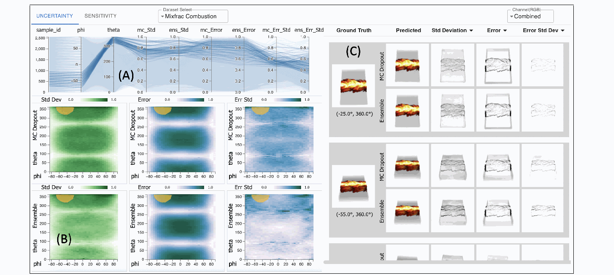

The question
The model takes camera azimuth and elevation as inputs and predicts a 128 × 128 volume-rendered image. The question is how to inspect its uncertainty, prediction error, and response to small viewpoint changes—not just whether the image looks plausible.
My contribution
I co-authored this work, examining pixel-level uncertainty, prediction error, and gradient sensitivity using MC-Dropout and Deep Ensembles, alongside interactive visual analysis. The paper reflects a collaborative research effort.
The approach
- Compare two uncertainty methods. Use 100 stochastic passes through a dropout-enabled model or predictions from 20 separately trained ensemble members. Pixel-wise standard deviation measures uncertainty for each RGB channel.
- Keep the measurements distinct. Compare predictions with ground truth for pixel-wise error. Compute gradients with respect to the two input view angles to measure viewpoint sensitivity.
- Link overview to detail. Combine view-space heatmaps, parallel coordinates, lasso selection, and RGB image views so users can compare methods and inspect selected viewpoints.

What the study found
Evaluation used Turbulent Combustion, Hurricane Isabel, and Asteroid Impact data, with 10,000 training viewpoints and 512 test viewpoints. Each ensemble member trained on an 80% sample of the training set.
- Image quality versus resource cost. Ensembles achieved the highest PSNR and lowest MSE on all three datasets. MC-Dropout produced image quality close to the no-dropout baseline while adding uncertainty estimates with much lower training and storage costs than ensembles.
- Uncertainty depends on the view. Complex structures and boundaries often showed greater uncertainty and error. The interface also exposed differences between RGB channels and viewpoints with high sensitivity.
- More samples had diminishing returns. Uncertainty and PSNR largely stabilized around 100 MC samples and 15–20 ensemble members in the tested configurations.
The trade-off
Ensembles were faster at inference in these experiments, despite their higher training and storage costs. MC-Dropout offered a practical single-model alternative with comparable uncertainty patterns. These results describe the tested scientific visualization models and datasets; they are not a universal ranking of the two methods.